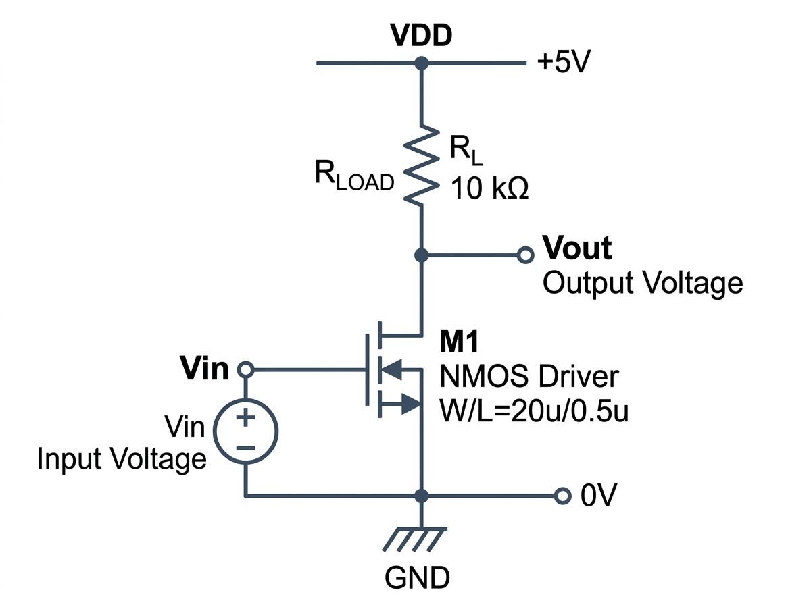
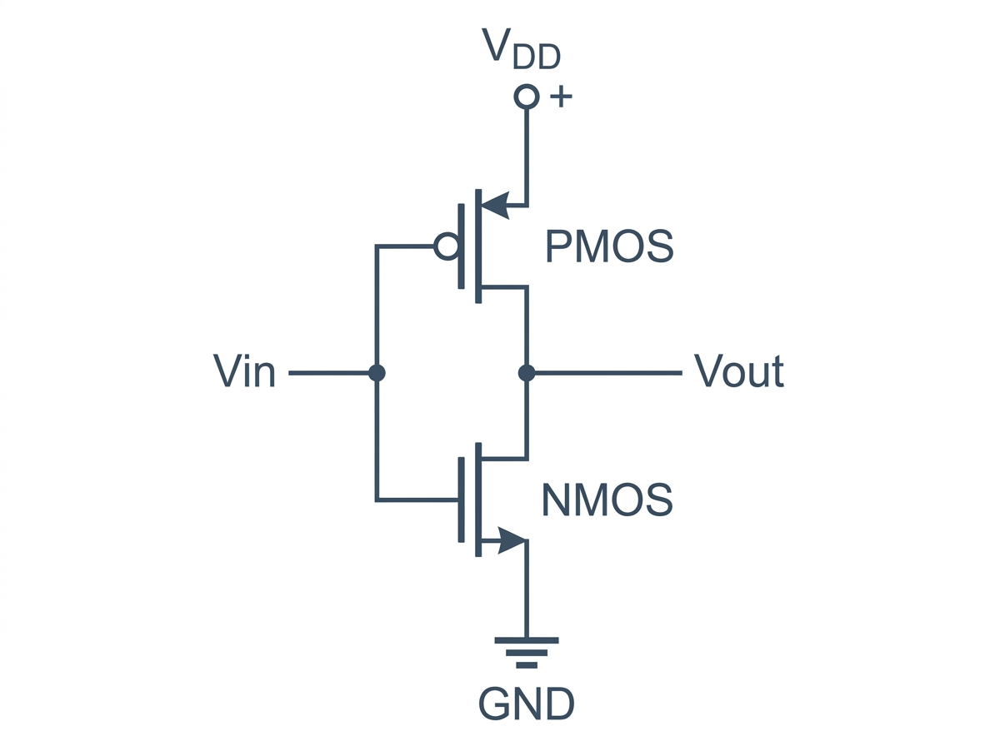

Introduction
In Very Large Scale Integration (VLSI) design, an inverter is one of the most basic and important digital logic circuits. It performs the NOT operation, meaning that it produces an output opposite to its input. Inverters are widely used as building blocks for logic gates, memory circuits, processors, and other digital systems.
Two important inverter technologies are the NMOS inverter and the CMOS inverter. Although both can perform the NOT operation, they differ significantly in terms of circuit structure, power consumption, performance, and chip area.
The comparison between NMOS and CMOS inverters helps us understand why CMOS technology has become the dominant technology for modern VLSI circuits.
1. NMOS Inverter
An NMOS inverter is a logic inverter implemented using N-channel MOSFETs (NMOS transistors). In its basic form, it consists of an NMOS transistor and a load device.
The input is applied to the gate of the NMOS transistor, while the output is taken from the drain.

Working of NMOS Inverter
- When the input is LOW (0), the NMOS transistor is OFF.
- The load pulls the output toward HIGH (1).
- When the input is HIGH (1), the NMOS transistor turns ON.
- The transistor provides a path to ground, making the output LOW (0).
Advantages of NMOS Inverter
- Simple circuit structure.
- Requires fewer transistors.
- Smaller area compared with early CMOS implementations.
- Historically useful for high-density digital circuits.
Disadvantages of NMOS Inverter
- Consumes static power when the transistor is ON.
- Has a relatively lower noise margin.
- Output HIGH may not be a strong logic HIGH depending on the load configuration.
- Less suitable for modern low-power VLSI systems.
2. CMOS Inverter
A CMOS inverter is made using two complementary MOSFETs:
- One PMOS transistor
- One NMOS transistor
The PMOS transistor is connected to the supply voltage (VDD), while the NMOS transistor is connected to ground. Their gates are connected together and receive the same input.
The output is taken from the common connection between the PMOS and NMOS transistors.

Working of CMOS Inverter
When the input is LOW (0):
- PMOS turns ON.
- NMOS turns OFF.
- Output is connected to VDD.
- Output becomes HIGH (1).
When the input is HIGH (1):
- PMOS turns OFF.
- NMOS turns ON.
- Output is connected to ground.
- Output becomes LOW (0).
3. Performance Comparison
Performance of an inverter is generally evaluated using parameters such as propagation delay, switching speed, noise margin, and drive capability.
NMOS
NMOS inverters can provide good switching performance, but their performance depends strongly on the load transistor and circuit configuration. The rising and falling transitions may not be equally strong.
CMOS
CMOS provides relatively balanced pull-up and pull-down operation because it uses complementary PMOS and NMOS transistors. It provides good switching characteristics and high noise immunity.
CMOS technology can also be scaled effectively for modern high-speed processors and digital circuits.
4. Power Consumption Comparison
Power consumption is one of the most important parameters in VLSI design.
NMOS Power Consumption
In an NMOS inverter, a conducting path can exist between the supply and ground during a logic state. As a result, static power consumption can be significant.
This makes NMOS less suitable for battery-powered and low-power applications.
CMOS Power Consumption
One of the biggest advantages of CMOS is its very low static power consumption.
In steady-state operation:
- For input LOW, PMOS is ON and NMOS is OFF.
- For input HIGH, PMOS is OFF and NMOS is ON.
Ideally, there is no direct DC path from VDD to ground in either stable state.
CMOS mainly consumes power during switching due to charging and discharging of capacitances.
The dynamic power can approximately be expressed as:
- α = switching activity
- C_L = load capacitance
- V_DD = supply voltage
- f = switching frequency
Thus, CMOS is highly suitable for low-power VLSI design.
5. Area Comparison
The physical area occupied by transistors is important because smaller circuits allow more devices to be integrated on a single chip.
NMOS
A basic NMOS inverter can require fewer active devices, so its transistor count and layout can be smaller in some implementations.
However, it requires a load device, and the actual area depends on the technology and implementation.
CMOS
A CMOS inverter requires two transistors: one PMOS and one NMOS.
Although it uses more transistors than a basic NMOS inverter, modern CMOS fabrication techniques allow extremely small transistor dimensions. CMOS therefore provides an excellent balance between area, power, and performance.
6. NMOS vs CMOS Inverter
The following table summarizes the key structural and electrical differences between NMOS and CMOS inverter technologies:
| Parameter | NMOS Inverter | CMOS Inverter |
|---|---|---|
| Transistors | NMOS with load | One NMOS + One PMOS |
| Logic Operation | NOT | NOT |
| Static Power | Higher | Very low ideally |
| Dynamic Power | Present | Present |
| Noise Margin | Lower | Higher |
| Switching Performance | Good, configuration dependent | Excellent |
| Power Efficiency | Lower | Higher |
| Area | Can be smaller in basic implementations | Slightly larger at transistor level |
| Output Levels | May be degraded depending on load | Strong logic 0 and logic 1 |
| VLSI Suitability | Limited in modern low-power designs | Excellent |
| Modern Usage | Mostly historical/specialized | Dominant technology |
7. Why CMOS is Preferred in Modern VLSI
CMOS technology is widely used in modern VLSI because it provides an excellent combination of:
- Low static power consumption
- High noise immunity
- Full logic swing
- Good switching performance
- High transistor density
- Low power-delay product
- Compatibility with large-scale integration
These advantages make CMOS suitable for microprocessors, memories, mobile devices, embedded systems, IoT devices, and other digital integrated circuits.
8. Applications
NMOS Inverter
NMOS technology was historically used in:
- Early microprocessors
- Digital logic circuits
- Memory circuits
- Older integrated circuits
CMOS Inverter
CMOS technology is currently used extensively in:
- Microprocessors
- Smartphones
- Digital signal processors
- Memory devices
- Embedded systems
- IoT devices
- System-on-Chip (SoC) designs
- Digital logic circuits
Conclusion
The NMOS and CMOS inverters both perform the fundamental NOT operation, but their electrical characteristics are significantly different. NMOS technology offers a relatively simple structure and can provide compact implementations, but it suffers from higher static power consumption and weaker logic characteristics.
CMOS uses complementary PMOS and NMOS transistors to achieve low static power consumption, full voltage swing, high noise immunity, and good performance. Although a CMOS inverter uses two transistors, its overall advantages make it much more suitable for modern VLSI systems.
Therefore, CMOS has become the preferred technology for modern digital VLSI design, especially where low power, high performance, reliability, and scalability are important.
Key Takeaway
• NMOS → Simpler but higher static power
• CMOS → Low power, high noise immunity, and better overall VLSI performance
In modern VLSI, the advantages of CMOS make it the clear choice for most digital applications.